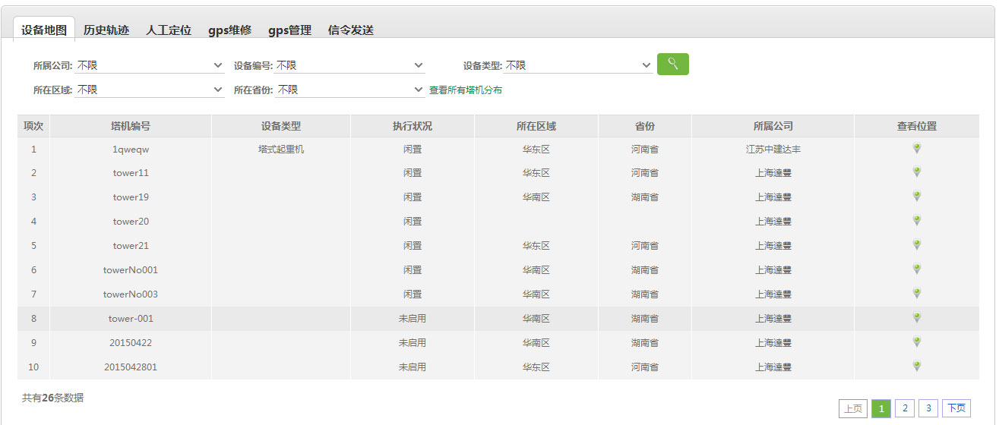

10.1、设备地图

说明：
1、
进行设备地图查询，查询条件：管理公司、设备编号、设备类别、所在区域、所在省份；
2、查看设备所在位置,也可以查看查询出的所有设备的所在位置;
 进行设备地图查询，查询条件：管理公司、设备编号、设备类别、所在区域、所在省份；进行设备地图查询，查询条件：管理公司、设备编号、设备类别、所在区域、所在省份；进行设备地图查询，查询条件：管理公司、设备编号、设备类别、所在区域、所在省份；
进行设备地图查询，查询条件：管理公司、设备编号、设备类别、所在区域、所在省份；进行设备地图查询，查询条件：管理公司、设备编号、设备类别、所在区域、所在省份；进行设备地图查询，查询条件：管理公司、设备编号、设备类别、所在区域、所在省份；